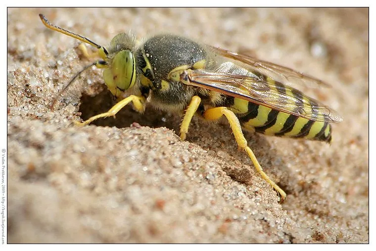

昆虫 · 动物界
沙蜂 Bembix rostrata

在沙地上掘洞筑巢的独居蜂，胸部有黄色斑纹，飞行敏捷，捕捉蝇类带回巢中喂养幼虫，是沙质生境常见的天敌昆虫。
- 分类
- 门节肢动物门纲昆虫纲目膜翅目科方头泥蜂科属沙蜂属
- 栖息环境
- 沙地、河岸、沙丘和开阔草地，多在沙面上掘洞筑巢
- 地理分布
- 中国北方、欧洲和中亚的沙质生境
- 保护级别
- IUCN 暂无评估；中国未列入国家重点保护名录
物种志
沙蜂体长 1.5–2 cm，身体黑色，胸部和腹部有黄色斑纹，腹部有细腰，复眼大，口器发达；雌蜂的足上长有刚毛，便于在沙中挖掘。它属于独居蜂，不像胡蜂那样结成大群体，而是在沙地上挖出短小的洞穴作为巢。
沙蜂分布在中国北方、欧洲和中亚的沙地、河岸、沙丘和开阔草地，成虫捕食蝇类、蛾类等飞虫，也会取食花蜜。雌蜂在沙中挖掘巢穴，捕捉蝇类麻痹后带回巢中，产卵后封口，幼虫孵化后取食猎物。沙蜂飞行迅速，常在沙面上低飞巡视，受惊时会飞离；它的巢口周围常有一圈松散的沙粒，雌蜂会同时挖掘多个巢穴。它一般不攻击人，是沙质生态系统中的天敌昆虫。目前尚无保护评估。
形态与习性
- 食性成虫捕食蝇类、蛾类，也取食花蜜
- 体长1.5–2 cm
- 识别体黑色，胸腹部有黄色斑纹，腹部细腰
- 筑巢在沙地掘洞，巢口周围有松散沙粒
- 繁殖捕蝇麻痹后带回巢中，产卵封口
- 习性独居，低飞巡视沙面，飞行敏捷
趣味知识
- 沙蜂是独居蜂，每只雌蜂都自己挖洞、捕猎和养育后代。
- 它会先把蝇类蜇麻痹，再拖进沙洞，让幼虫吃上新鲜食物。
- 沙蜂常在沙面上低飞巡视，巢口周围留有一圈松沙。